Префектура Хёго · остров Авадзи · город Авадзи
Город Авадзи: вершина моста Акаси-Кайкё, школы с новой жизнью и разлом 1995 года
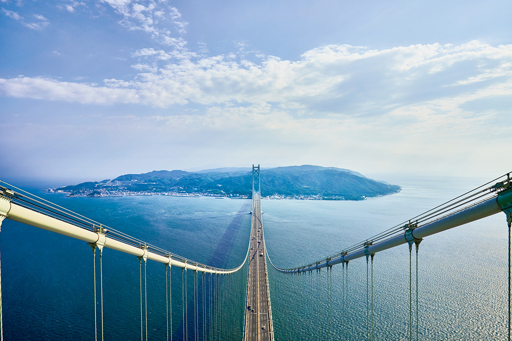
Город Авадзи встречает каждого, кто едет на остров по мосту Акаси-Кайкё из Кобе. Здесь можно подняться на вершину башни этого моста, провести день в бывшей сельской школе и постоять над разломом, с которого в 1995 году началось одно из самых тяжёлых землетрясений в истории Японии.
Город
Ворота острова
Авадзи самый большой остров Японского внутреннего моря и самая южная часть префектуры Хёго. Если ехать из Кобе по мосту Акаси-Кайкё, первым на острове будет город Авадзи. Мост открыли в 1998 году, и с тех пор отсюда около часа на машине до Осаки и около получаса до Кобе. Про Авадзи говорят, что это остров, но не глухая окраина, и северный город особенно близок к большим городам Кансая.
В 1995 году под островом произошло Великое землетрясение Хансин-Авадзи, и местные районы сильно пострадали. Десять лет спустя, в 2005 году, пять посёлков объединились в город Авадзи. В 2014 году проезд по мосту заметно подешевел.
Мягкий климат и богатые рыбой воды сделали Авадзи кладовой продуктов. В древности остров поставлял еду к императорскому двору, и его называли «микэцукуни», страной, которая кормит двор. В городе Авадзи и сегодня много рыбаков и фермеров, а вслед за ними выросло и третье занятие: туризм.
Мост
Подняться на башню Акаси-Кайкё
Самый необычный способ посмотреть на остров предлагает экскурсия «Бридж Уорлд». Группа поднимается на вершину главной башни моста Акаси-Кайкё, откуда пролив и берег Авадзи видны с высоты птичьего полёта. Сбор проходит на материковой стороне, в Музее науки о мостах в Кобе.
Экскурсии проводят только в назначенные дни: в 2025 году это были дни с апреля по ноябрь и март следующего года. Утренняя группа идёт с 9:10 до 11:50, дневная с 13:25 до 16:05. В группе от 12 до 48 человек, записываться нужно заранее. В 2025 году участие стоило 5000 иен для взрослых и 2500 иен для учеников средней школы, а в выходные и праздники 6000 и 3000 иен.
Экскурсия «Бридж Уорлд» на мост Акаси-Кайкё
- Адрес
- префектура Хёго, Кобе, район Таруми, Хигаси-Маико, 4-114 (Музей науки о мостах)
- Даты
- апрель–ноябрь и март, в дни, назначенные организатором
- Часы работы
- утренняя группа сбор в 9:00, экскурсия 9:10–11:50; дневная группа сбор в 13:15, экскурсия 13:25–16:05
- Цены / Вход
- взрослые 5000 иен, ученики средней школы 2500 иен; в субботу, воскресенье и праздники 6000 и 3000 иен; только по предварительной записи, группа 12–48 человек
Западный берег
Закаты над Внутренним морем
Сильнее всего за последние годы изменился западный берег города. Раньше здесь были тихие деревни рыбаков и крестьян, потом этот участок застроила крупная ресторанная компания. Теперь вдоль моря стоят рестораны и гостиницы, и сюда приезжают поесть с видом на Внутреннее море и встретить закат. Новые места полюбили не только гости с материка, но и сами жители острова.
Школы
Вторая жизнь сельских школ
Детей на острове становится меньше, а после объединения посёлков в один город часть начальных школ закрылась. Чтобы старые здания не пустовали, город передал их частным компаниям. Те перестроили бывшие школы под рестораны, магазины и гостиницы, но постарались сохранить их узнаваемый школьный облик.
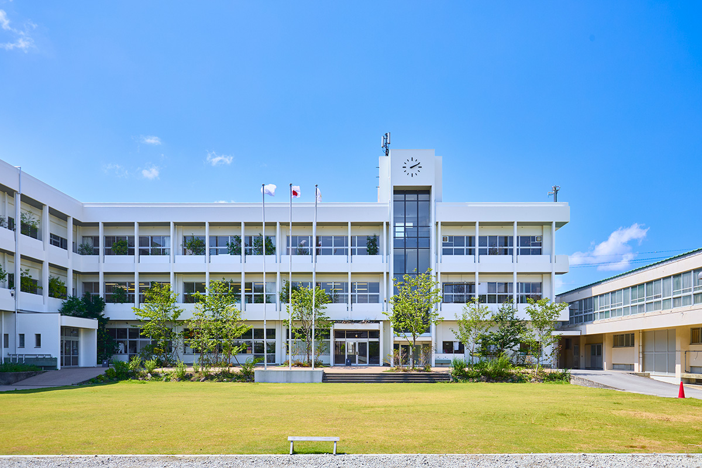
«Эй-то»: одежда в квартале благовоний
Район Эи на западном берегу известен фабриками благовонных палочек, которые стоят здесь одна за другой. Авадзи упоминается в древней хронике «Нихон сёки» (720 год) как место, где в Японии появились благовония, и сегодня остров делает больше всех в стране благовонных палочек японского производства.
«Эй-то» (ei-to) открылся в бывшей начальной школе Эи. Это галерея и магазин одежды, где делают ставку на экологичную моду и заодно рассказывают о местном ремесле: продают современные благовония и показывают материалы по их истории. Отдельно стоит зайти в «Музей Эи». Его главный экспонат это подробная макетная модель района Эи второй половины 1950-х и начала 1960-х годов.
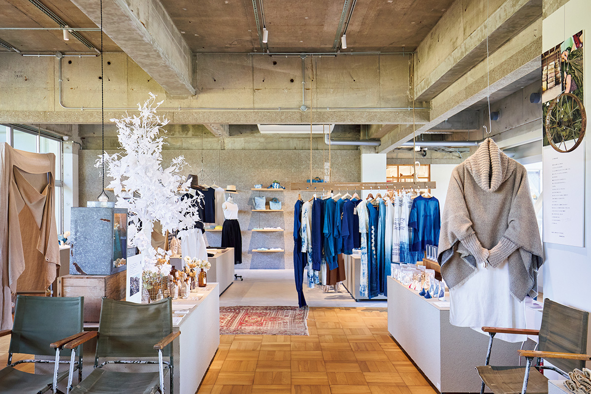
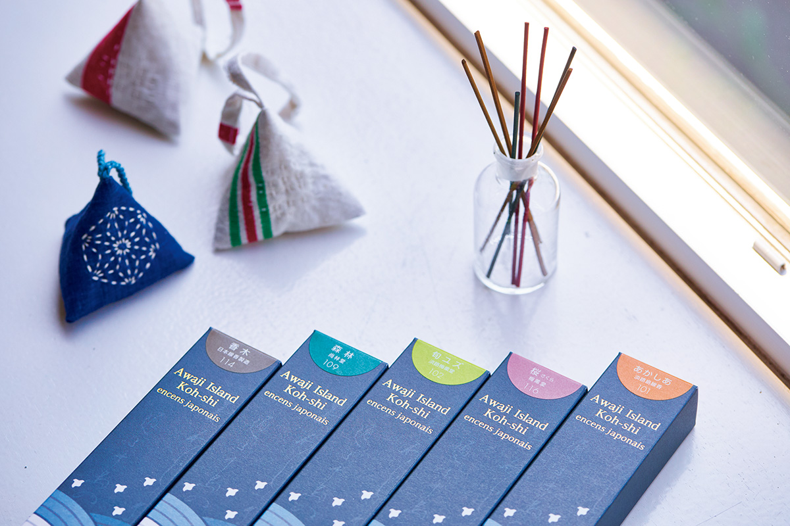
«Эй-то»
- Адрес
- префектура Хёго, Авадзи, Эи, 2622-3
- Телефон
- +81 799-70-9129
- Часы работы
- кафе 8:00–18:00 (последний заказ в 17:30), остальное 10:00–17:00
- Выходные
- нерегулярные
«Сакиа»: школа для работы и отдыха
«Сакиа» (SAKIA) занимает бывшую начальную школу Осаки на западном берегу. Это общественное пространство, где можно провести день по-разному. Здесь работают столовая-кафе «Осаки сёкудо» с утренним меню и обедами, магазин и детская библиотека. Есть коворкинг «Сатояма Деск», где удобно поработать в поездке, и гостиница «Сакиа Стэй» на 14 номеров.
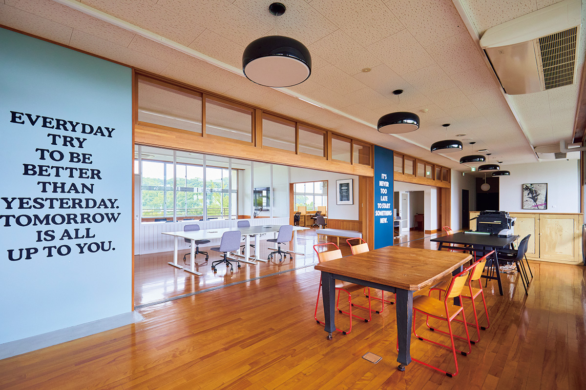
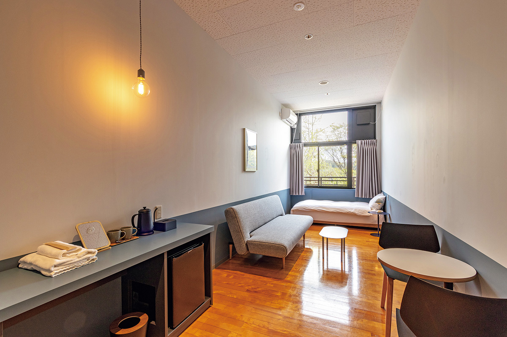
«Сакиа»
- Адрес
- префектура Хёго, Авадзи, Осаки, 1798-3
- Телефон
- +81 799-70-9077
- Часы работы
- кафе «Осаки сёкудо» 7:00–16:00 (утреннее меню 7:00–11:00, обед 11:00–15:30, последний заказ); детская библиотека 9:00–18:00; коворкинг «Сатояма Деск» 9:00–20:00
- Номера
- 14
- Заезд / выезд
- 15:00 / 10:00
- Сайт
- sakia.jp
1995
Разлом Нодзима
В 2025 году исполнилось 30 лет со дня Великого землетрясения Хансин-Авадзи. Его очаг находился под бывшим посёлком Хокудан, который сегодня составляет северо-западную часть города Авадзи. Здесь, в Мемориальном парке землетрясения Хокудан, работает музей разлома Нодзима. Разлом вышел на поверхность во время землетрясения, и музей сохранил его таким, каким он был тогда.
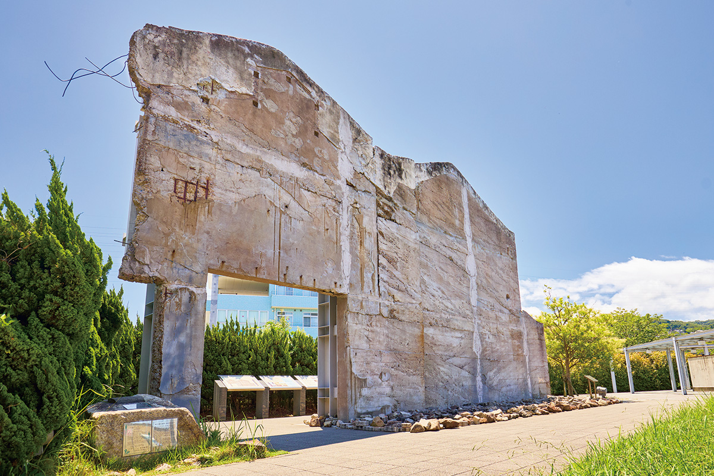
В музее оставлен участок разлома длиной около 140 метров. Видно, как сдвинулась живая изгородь и как треснула земля, а в траншее можно заглянуть в толщу грунта. Рядом стоит «Мемориальный дом», который почти не пострадал, хотя находится прямо у активного разлома. В павильоне землетрясения толчки можно пережить в очках виртуальной реальности. После такого музея о подготовке к стихийным бедствиям думаешь совсем иначе.
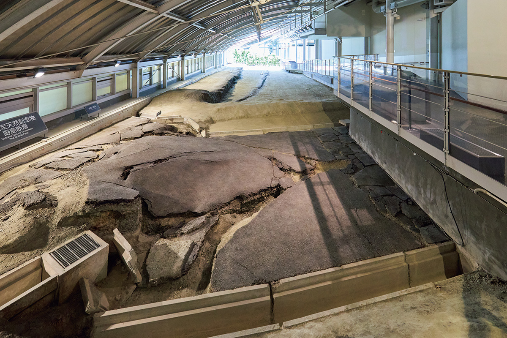
В 2022 году разлом Нодзима вошёл в список объектов мирового геологического наследия.
Музей разлома Нодзима в Мемориальном парке землетрясения Хокудан
- Адрес
- префектура Хёго, Авадзи, Огура, 177
- Телефон
- +81 799-82-3020
- Часы работы
- 9:00–17:00
- Выходные
- в декабре бывают временные закрытия
- Цены / Вход
- взрослые 730 иен, ученики средней и старшей школы 310 иен, школьники младших классов 260 иен
Природа
Музей Земли Авадзи
20 марта 2025 года по соседству с музеем разлома открылся Музей Земли Авадзи (AWAJI EARTH MUSEUM). Его девиз: «Играть в природе, чувствовать Землю». Если посетить оба места за один день, история землетрясения сложится в одну картину с природой, которая веками лепила этот остров.
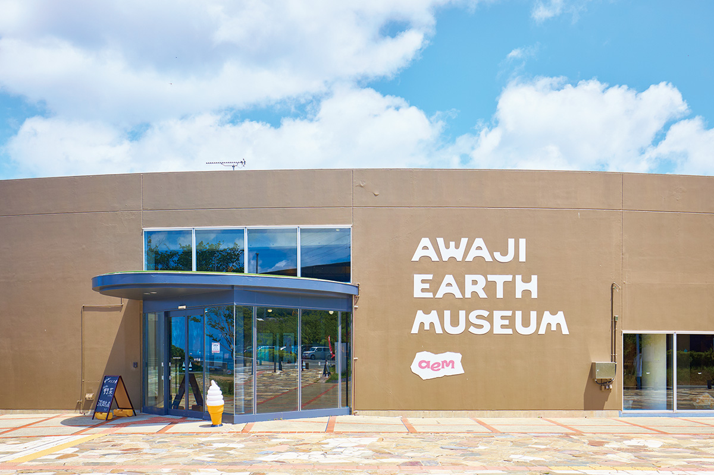
В здании собраны кафе, магазин, игровая комната и учебный центр, где можно провести время с детьми и в дождь. Для строительства использовали переработанные природные материалы с острова, и весь музей задуман как пример хозяйства, в котором ничего не пропадает. Рядом с музеем разбит сад: спиральный сад, огород со съедобными растениями, которые можно собрать, и «дождевой сад», где растения поливают колодезной и дождевой водой. Здесь же проходят мастер-классы, а с бесплатными инструментами из музея можно самостоятельно изучать разные стороны природы.
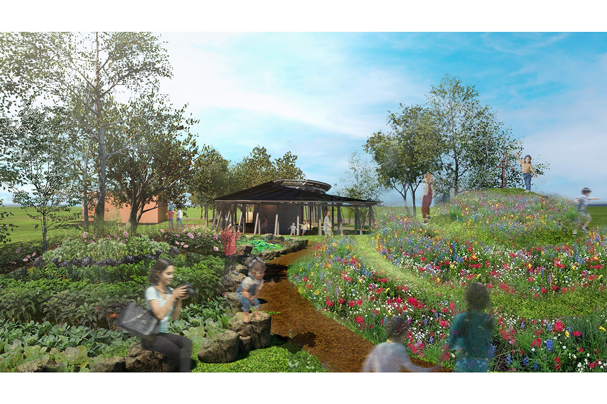
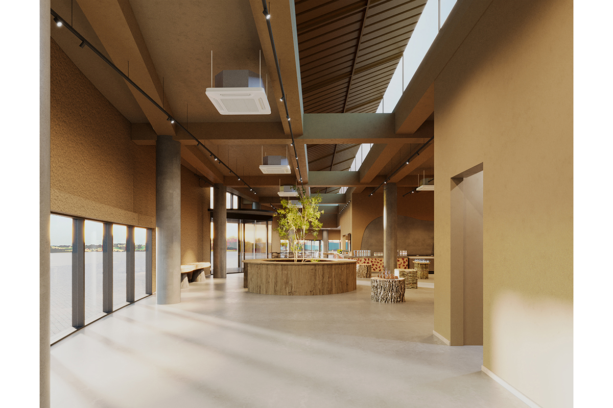
Кафе работает с местными фермерами и готовит из продуктов Авадзи. Утром здесь подают свежую выпечку, а в обед устраивают буфет с хлебом и салатами. Обед с пастой и буфетом из домашнего хлеба и свежих овощей стоил 1800 иен в 2025 году, пасту выбирают из семи видов. Самая популярная из них «наполитана Авадзи» в густом сырном соусе. Есть и собственные десерты, придуманные по мотивам слоёв земли и глины. Отходы кафе задумано превращать в компост для сада.
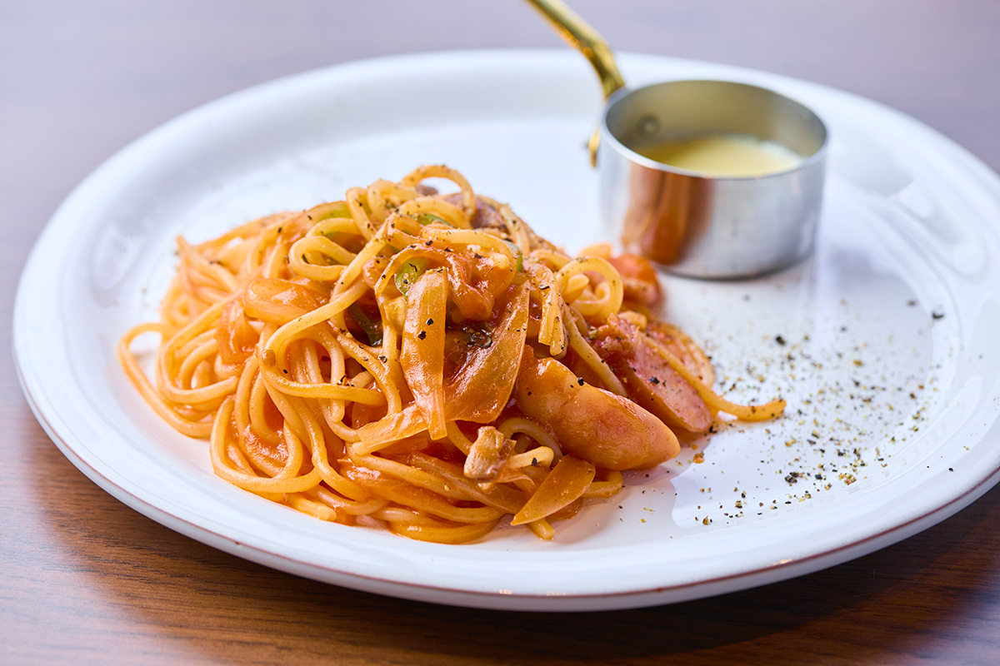
В магазине продают овощи, фрукты и продукты с острова, а также товары со всей Японии, сделанные с заботой о людях и природе. Отдельно лежат запасы еды на случай бедствия и работы художников, которые живут на Авадзи.
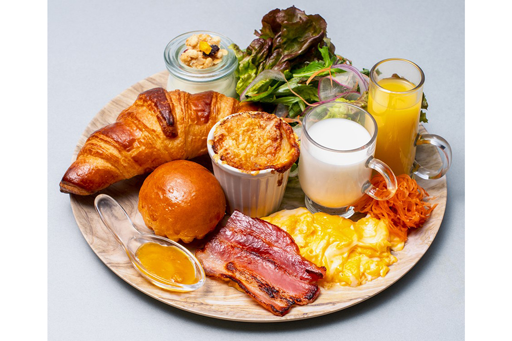
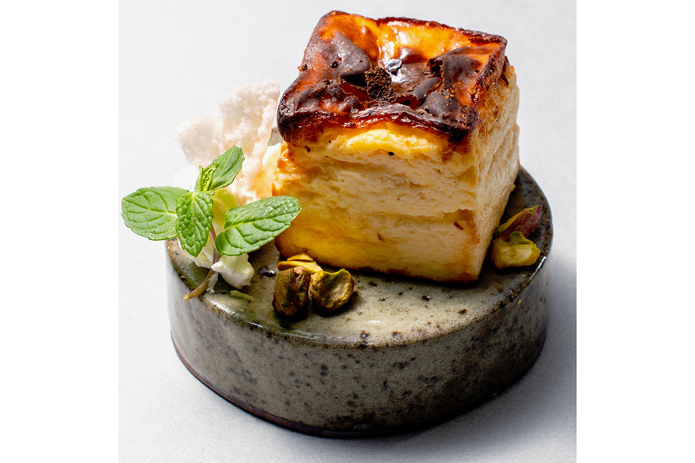
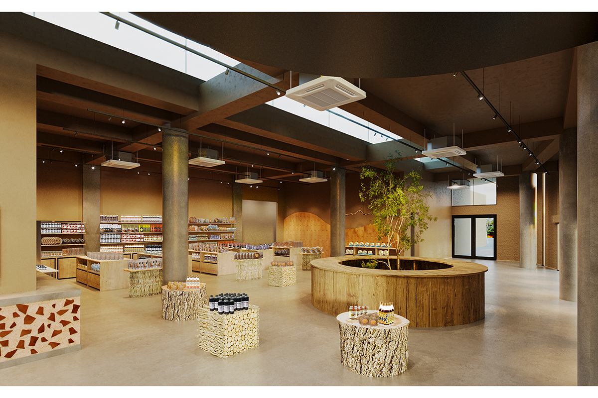
Музей Земли Авадзи (AWAJI EARTH MUSEUM)
- Адрес
- префектура Хёго, Авадзи, Огура, 173-3, на территории Мемориального парка землетрясения Хокудан
- Телефон
- +81 799-64-7088
- Часы работы
- магазин 9:00–17:00, кафе 9:00–16:30 (последний заказ в 16:00), обед 11:00–13:30
- Выходные
- нерегулярные
Фото: Косаку Китадзима.